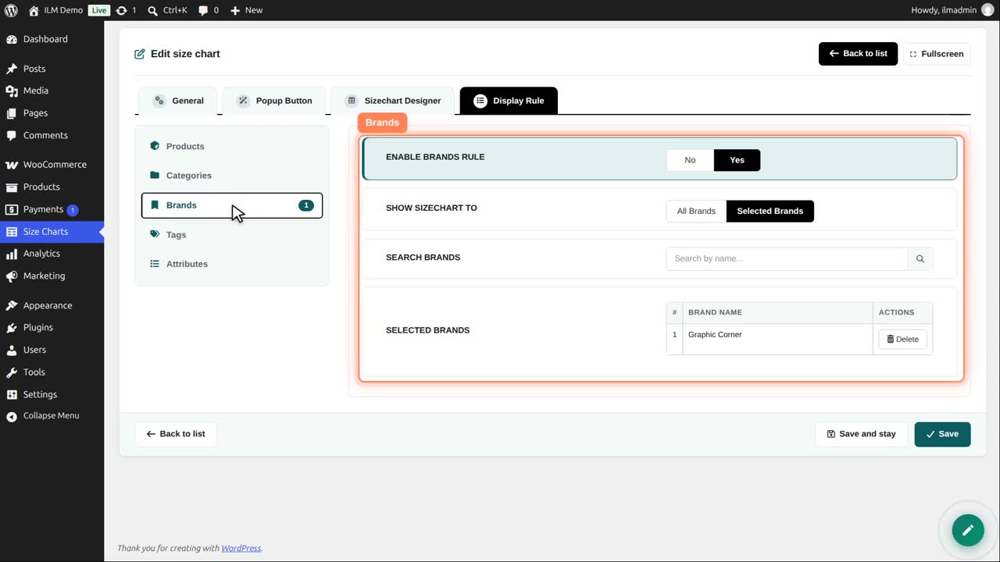
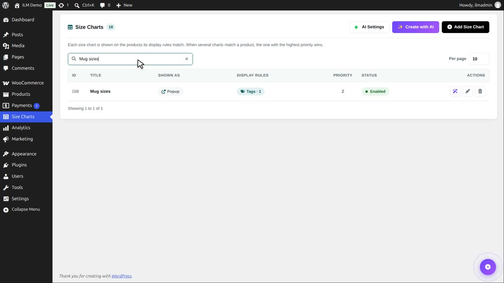
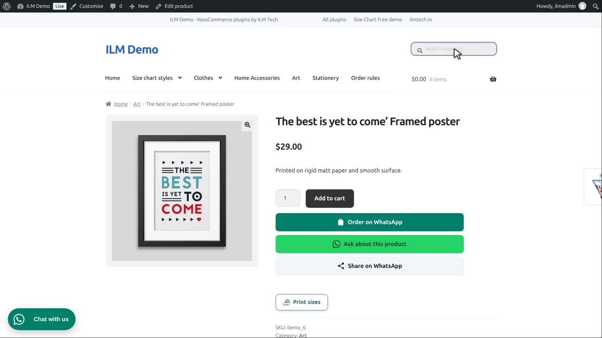
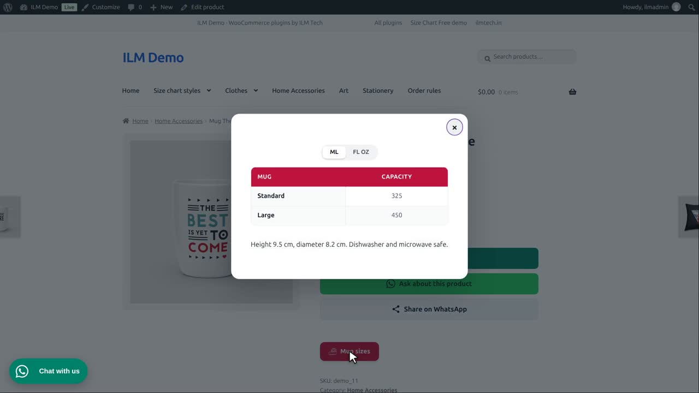

Edit the Print sizes chart, open Display Rule, then Brands. The rule is on, for the brand Graphic Corner.

Search and click a brand to add it, the same way as products and categories. Every product of these brands shows this chart.
In the shop, this framed poster is made by Graphic Corner, so it shows the print sizes.

Tags work the same way. The Mug sizes chart is shown for products with the tag accessories-supplier.

So this mug, which has that tag, shows the mug sizes, with a millilitre and fluid ounce switch.

A brand or tag rule is handy when one maker or one product line always uses the same sizes.